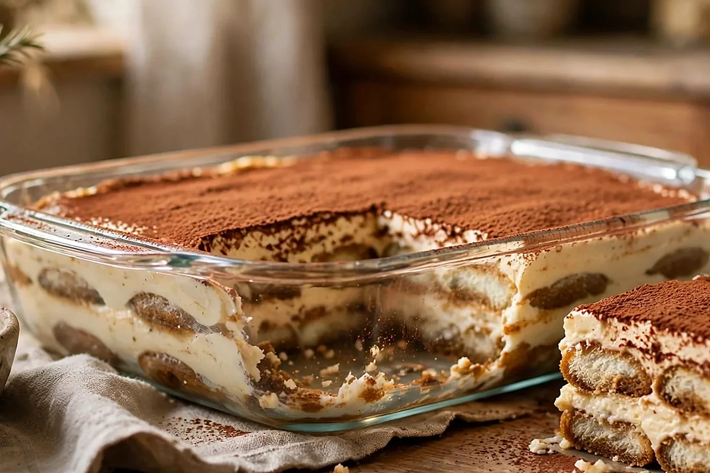

Tiramisu klassisch – cremig, schichtweise, unwiderstehlich
Tiramisu ist das Dessert, mit dem man Gäste glücklich macht: cremige Mascarpone, in Kaffee getunkte Löffelbiskuits und eine feine Schicht Kakao. Wichtig zu wissen: Die Creme enthält klassisch rohes Eigelb, der Alkohol ist Geschmackssache und darf einfach weggelassen werden.

Inhaltsverzeichnis
Zutaten
Zubereitung
- Eigelb und Zucker in einer Metallschüssel über einem heißen Wasserbad mit dem Schneebesen 5–7 Minuten hell und cremig aufschlagen. Vom Wasserbad nehmen und etwas abkühlen lassen – so wird das rohe Eigelb schonend erhitzt.
- Den Mascarpone glatt rühren und die Eigelbcreme unterrühren. Die Sahne steif schlagen und vorsichtig unterheben.
- Den abgekühlten Kaffee in eine flache Schale gießen und nach Belieben den Amaretto unterrühren.
- Die Löffelbiskuits einzeln ganz kurz – nur 1–2 Sekunden – in den Kaffee tauchen und den Boden einer Auflaufform (ca. 20 × 25 cm) damit auslegen. Sie dürfen nicht durchweichen.
- Die Hälfte der Mascarponecreme darauf verstreichen. Eine zweite Schicht getunkter Biskuits darauflegen und mit der restlichen Creme abschließen, glatt streichen.
- Das Tiramisu abgedeckt mindestens 4 Stunden, am besten über Nacht, im Kühlschrank durchziehen lassen.
- Erst kurz vor dem Servieren großzügig mit Kakaopulver bestäuben und in Stücke schneiden.

Tipp
Die Biskuits wirklich nur kurz eintauchen – sie saugen im Kühlschrank noch nach und das Tiramisu wird sonst matschig. Wegen des Eigelbs nur ganz frische Eier verwenden und das Dessert durchgehend kühl aufbewahren.
📌 Mehr Rezept-Ideen findest du auf unserem Pinterest-Profil:
Lecker Rezepte auf Pinterest
Lecker Rezepte auf Pinterest